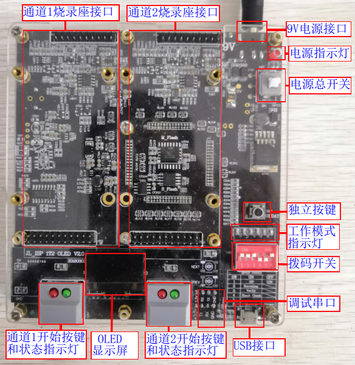
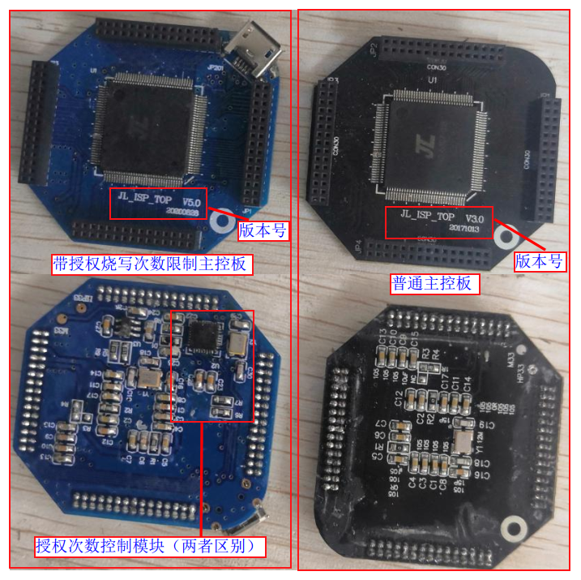
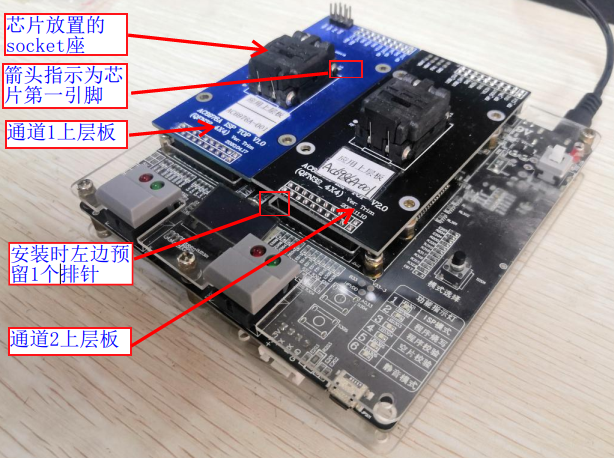
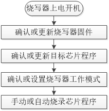

1.1. Programmer Overview
1.1.1. Functional description
The Jieli Technology 1-to-2 programmer (also commonly called a writer or programming device) is mainly used for offline programming (no PC connection is needed during programming) of firmware into the various Jieli chip series. It is suitable for scenarios in which bare chips are programmed first and then surface-mounted onto boards.
It can program 2 target chips at the same time. It supports manual programming of target chips during development, and automatic programming of target chips together with an automatic programming handler in mass production.
Manual programming of bare chips requires a top board, and automatic programming of bare chips requires an adapter board. The 1-to-2 programmer mainly provides the following functions:
Firmware programming
Firmware verification
Chip blank check
Authorized programming count limit
Bluetooth address auto-increment
Programming of third-party data such as authentication codes
Programming of custom resource files
Chip performance test
Customization of special functions
Important
For detailed instructions on the programmer's functions and the configuration related to each function, see the corresponding sections!
1.1.2. Programmer package contents
No. |
Module type |
Components |
Description |
|---|---|---|---|
1 |
Programmer main unit |
Main control board |
Controls the operation of the programmer |
9V power input |
Main power supply port |
||
Power indicator light |
Lights up when powered on |
||
Latching power switch |
Turns the main power on and off |
||
DIP switch |
Sets the working mode |
||
Standalone button (mode selection) |
Forces an update of the programmer firmware |
||
USB port |
For upgrading the programmer firmware |
||
Debug serial port |
Helps engineers debug when the programmer has problems |
||
Channel 1 programming socket connector |
Connects to a top board or an adapter board |
||
Channel 2 programming socket connector |
Connects to a top board or an adapter board |
||
Channel 1 Start button |
Press the Start button to program manually |
||
Channel 2 Start button |
Press the Start button to program manually |
||
Channel 1 Start button indicator light |
Indicates the programming status |
||
Channel 2 Start button indicator light |
Indicates the programming status |
||
Working mode status indicator light |
Indicates the programming, verification, blank check and mute modes |
||
OLED display |
Displays programming status information |
||
Buzzer |
Audible programming status alerts |
||
2 |
Top board |
The socket board that holds the chip during manual programming: a minimum chip system board used with the programmer |
|
3 |
Adapter board |
Standardizes the interface; for automatic programming it connects the adapter socket board |
|
4 |
Adapter socket board |
The socket board that holds the chip during automatic programming: a minimum chip system board used with the programmer |
|
5 |
USB data cable |
Connects the programmer to the PC, |
|
6 |
Power adapter |
Use a power supply rated 9.0V, 2.0A or above |
1.1.3. Introduction to the programmer main unit
1.1.3.1. Differences between programmer versions
This document describes the commonly used V3.1 and V5.0 hardware versions of the programmer. These two hardware versions have the same functions and differ mainly in how the working mode is set. The differences are as follows:
Hardware version |
Differences |
|---|---|
V3.1 |
The programming, verification and blank check working modes are set with the DIP switch |
V5.0 |
The programming, verification and blank check working modes are set with a standalone button; there is no DIP switch |
1.1.3.2. V3.1 hardware version programmer
The V3.1 hardware version programmer is shown in Front of the V3.0 main unit.

Front of the V3.0 main unit
1.1.3.3. V5.0 hardware version programmer
The V5.0 hardware version programmer is shown in Front of the V5.0 main unit.

Front of the V5.0 main unit
1.1.3.4. Back of the programmer
The back of the programmer main unit is shown in Back of the main unit.

Back of the main unit
1.1.4. Introduction to the main control board
1.1.4.1. Differences between main control board versions
Two hardware versions of the main control board are currently available: the V3.0 main control board and the V5.0 main control board. The differences between them are as follows:
Hardware version |
Differences |
|---|---|
V3.0 |
Without the authorized programming count limit function |
V5.0 |
With the authorized programming count limit function |
1.1.4.2. Main control board photos
The main control boards of the different versions are shown in Main control boards of different versions

Main control boards of different versions
1.1.5. Top board introduction and installation
Manual programming requires a top board that matches the chip package and model. The top board holds the chip to be programmed and communicates with the programmer to program the chip.
You can also program semi-finished PCBAs without a soldered battery, devices, development boards, sockets and minimum chip systems directly by wiring them up. For the programming wiring, see "Chip Programming Wiring and Power Supply".
A top board installed on the programmer is shown in Top board installation. Simply insert the top board, facing the same direction as the front of the programmer, into the
channel 1 programming socket connectoror thechannel 2 programming socket connector.

Top board installation
Installation notes
The connector between the programmer and the top board has two rows (upper and lower): the upper row is 20P and the lower row is 22P,
whereas on the programmer's top plate the upper row is 20P and the lower row is also 20P.
When installing the top board, align the lower row to the right, so on some top boards the leftmost column of pins in the lower row is left unused.
1.1.6. Adapter board introduction and installation
Automated programming with a handler requires an adapter board to connect the automatic programming control signal lines. The adapter board is also connected to a dedicated socket that matches the package and model of the chip programmed by the handler.
An adapter board connected to a socket and installed on the programmer is shown in Adapter board installation
Installing the adapter board:
Simply insert it, facing the same direction as the front of the programmer, into the channel 1 or channel 2 programming socket connector;
Installing the socket in which the robotic arm places the chips:
First, fasten the socket to the automated handler with screws;
Use the corresponding ribbon cable to connect the
socket connectorto thesocket connection porton the adapter board;Use the corresponding ribbon cable to connect the
handler's automatic programming IO control signal linesto theautomatic programming IO control signal lineconnector on the adapter board;

Adapter board installation
Important
The "Automatic programming IO control signal lines" (自动烧录IO控制信号线) connector has the
Start signal line,Busy signal line,Ok signal line,V3.3VandGNDsignal pinsFor the principle of automatic programming control, see "Automated Programming with a Handler"
Installation notes
Same as the top board installation
1.1.7. Programmer usage workflow
Programmer workflow
The general workflow for using the programmer is shown in Programmer workflow diagram.

Programmer workflow diagram
Workflow description
The following table describes the workflow.
Workflow
Description
Power on the programmer
The programmer firmware is already programmed before shipment,
so you can power on the programmer as soon as you receive itCheck or update the programmer firmware
The programmer firmware is the firmware of the main control chip that controls the operation of the whole programmer.
Before programming target chip firmware, be sure to check whether the current programmer firmware is the latest version.
If it is not, update the programmer firmware to the latest version through remote upgrade
(except in special cases); otherwise some programming problems may occur.Check or update the target chip firmware
The target chip firmware is the fw file, ufw file or key file generated by building the SDK project.
The file must be updated to and stored in the programmer
so that the corresponding data can be programmed into the target chip, or used for verification and blank check.
When updating the target chip firmware, you also need to configure the programming configuration items
to enable functions such as resource programming and chip performance testingCheck or set the programmer working mode
The working modes are programming, verification, blank check, etc.
Be sure to check the current working mode of the programmer to avoid programming problemsProgram the chip firmware manually or automatically
Manual programming means programming chips by hand using a top board;
automatic programming means programming automatically through an adapter board under the control of an automatic programming handler
1.1.8. Glossary
Programmer: also called a writer or programming device. A tool used to write data into programmable integrated circuits (such as microcontrollers, flash memory, OTP, etc.). In Jieli documents, tool interfaces, displays and so on, the terms
burn(烧录) andwrite(烧写) mean the same thing (programming).
Top board: the socket board that holds the chip during manual programming, that is, the minimum chip system board used with the programmer for manual programming. It converts the vpp 6.5v voltage output by the programmer into the voltages needed to program the chip, such as 4.2v, and brings out the programming lines that connect to the programmer. To program development boards or devices with already-mounted chips directly, see the "Chip Programming Wiring and Power Supply" section.
Adapter board: mainly converts the programmer's pin header signal lines into a general-purpose interface, used to connect the adapter socket board and the automatic programming signal lines during automatic programming.
Adapter socket board: the socket board in which the robotic arm conveniently places the chips during automatic programming, that is, the minimum chip system board used with the programmer for programming on a handler. Like the top board, it can also be used for manual programming.
Bare chip: generally, a chip that has not yet been mounted on a device.
Blank chip: a chip that has not been programmed since leaving the factory; usually this means that the chip's flash, hardware storage media, etc. contain no data.
Programmer firmware: the firmware that controls the operation of the whole programmer.
Target chip firmware: executable files such as fw and ufw files generated by building the SDK (software development kit). They can be programmed into the chip with the programmer, where they run and control the operation of the whole product.
Offline programming: programming without a PC. With the 1-to-2 programmer, the target chip firmware is first deployed from a PC to the programmer's memory and stored there, and the chips are then programmed offline.
fw file: an executable program for the target chip, commonly used to program blank chips.
ufw file: an executable program for the target chip, mainly used to update or upgrade the program of a device chip that can already run, for example via a test box, an SD card or a USB flash drive. Upgrading with the programmer is also supported.
key file: a key file. Once the key file is configured in download.bat in the download directory, the data of the generated fw/ufw files is encrypted. When the fw/ufw file data is programmed, the key file data is programmed into the chip's hardware storage medium, and when the chip runs, the hardware decrypts the program data so that the program can run. Each customer's programmer key file is unique: every customer has their own key file, and programming is possible only if the key file of the fw file matches the key file of the programmer. Only mass-production programmers support programming key files. You can also program the key file on its own first, and then program an fw file with the key file using other programming tools.